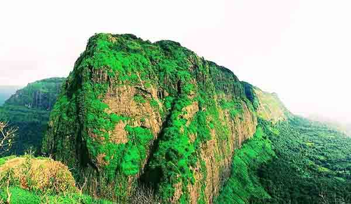
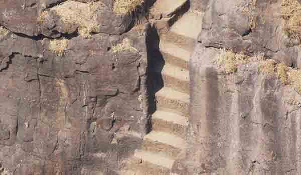

प्रबलगड किल्ला महाराष्ट्राच्या रायगड जिल्ह्यात आहे. पश्चिम घाटांसह सह्याद्री पर्वतरांगाच्या आलिंगन मध्ये हा नेत्रदीपक किल्ला आहे. हा किल्ला पठारावर समुद्रसपाटीपासून ७०० मीटर उंचीवर आहे आणि येथून इरशाळगड किल्ला आणि कल्याण किल्ल्याचे स्पष्ट दर्शन देते. या कारणास्तव, पहारेकरी म्हणून या किल्ल्याचा वापर केल्यामुळे त्याचे ऐतिहासिक महत्त्व आहे.
प्रबलगड भूप्रदेशात हिरव्यागार आच्छादनाने झाकलेले आहे. पनवेल आणि माथेरानच्या मध्यभागी हा किल्ला आहे. किल्ल्यापर्यंतचा ट्रेकिंग करणे आपल्या प्रवासासाठी एक विस्मयकारक वळण आणि साहसी असेल परंतु किल्ल्याकडे जाणारा मार्ग खूपच उंच असल्याने आपल्याला खूप काळजी घेणे आवश्यक आहे. जरी आपण ट्रेकर नसले तरीही हे स्थान दर्शनासाठी आश्चर्यकारक आहे. उलास नदी, पाताळगंगा नदी आणि गाधी नदी या दुर्गकाठी काही सुंदर नद्या वाहतात.
किल्ल्याच्या टेकडीवरील विस्तीर्ण दृश्य खरोखरच मंत्रमुग्ध करणारे आहे. किल्ल्याचा परिसर नयनरम्य असून फोटोग्राफीसाठी उपयुक्त आहे. प्रबलगड किल्ल्याचा शोध लावण्याव्यतिरिक्त, आपण तेथील ग्रामीण जीवनाचा आनंद घेऊ शकता आणि जंगलाच्या पायथ्याशी फिरू शकता. इथल्या निसर्गाचे सौंदर्य खूप आकर्षक आहे.
कसे पोहोचाल: हे स्थान रेल्वे, हवाईमार्ग आणि रस्ते वाहतुकीद्वारे चांगले जोडलेले आहे. मुंबई विमानतळावर पोहोचल्यानंतर आपण टॅक्सी भाड्याने घेऊ शकता जे तुम्हाला गडाच्या ठिकाणी घेऊन जाईल. जर आपण रेल्वेने प्रवास करत असाल तर पनवेल रेल्वे स्टेशन सर्वात जवळचे स्टेशन आहे. या स्थानकावरून बसेस आणि टॅक्सी उपलब्ध आहेत ज्या तुम्हाला गडावर सोडतात.